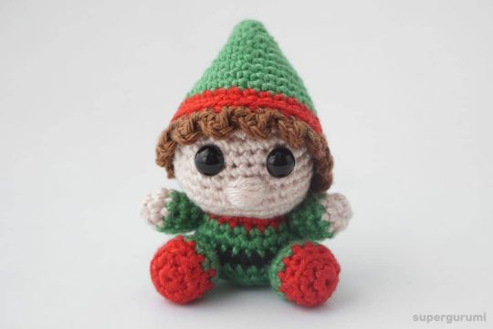

Trabajo de Duendes es una tienda de manualidades. Pidenos el diseño que más te guste a través del formulario de contacto y te responderemos con el tiempo y el precio. Hacemos muchos tipos de manualidades, como muñecos de fieltro, muñecos de tus peliculas favoritas, bisuteria de swarosky, Amigurumis, punto de cruz y figuritas de Fimo.
